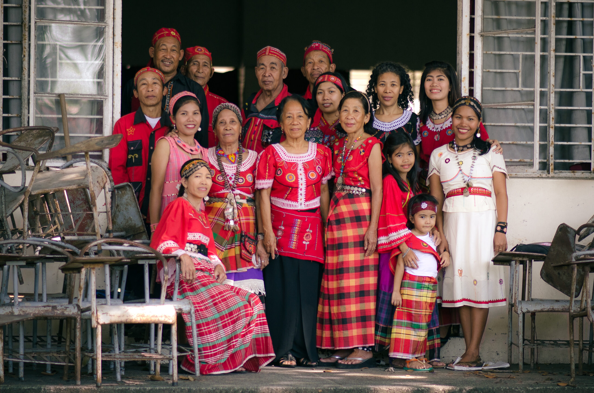

Antique - The Hidden Gem
ℹ️ About the Province of Antique
Antique ([ɐnˈtike]), officially the Province of Antique, is a province in the Philippines located in the Western Visayas region. Its capital and most populous town is San Jose de Buenavista. The province occupies the western portion of Panay Island, bordered by Aklan, Capiz, and Iloilo to the east, and facing the Sulu Sea to the west.
Known for its unspoiled landscapes, Antique offers a rare blend of coastal and mountainous environments. Its long stretch of quiet beaches, rolling hills, and dense forests make it an ideal destination for travelers seeking a more peaceful and nature-centered experience. Unlike more commercialized tourist spots, the province retains a laid-back atmosphere where local culture and traditions remain deeply rooted in everyday life.

Indigenous Iraynun-Bukidnon people
Antique is home to the indigenous Iraynun-Bukidnon people, who speak a dialect of the Kinaray-a language. Through generations of indigenous knowledge and traditional practices, they have created the only known rice terrace clusters in the Visayas. These terraces are grouped into four main areas: the General Fullon, Lublub, Bakiang, and San Agustin rice terraces.
The rice terrace clusters have been studied by the National Commission for Culture and the Arts and scholars from the University of the Philippines. There have also been ongoing efforts to nominate the Iraynun-Bukidnon Rice Terraces, along with the Central Panay Mountain Range, for inclusion in the UNESCO World Heritage List.
Beyond its cultural heritage, Antique is rich in natural attractions and outdoor activities. Visitors can experience river tubing adventures, relax in traditional kawa hot baths, hike through scenic mountain trails, or explore waterfalls hidden within lush forests. Marine life along its coast also supports fishing communities and offers opportunities for snorkeling and island exploration.
The province celebrates vibrant festivals that reflect its history and identity. Among the most notable is the Binirayan Festival, held every December, which commemorates the legendary arrival of ten Bornean datus and highlights Antiqueño culture through colorful performances, music, and local cuisine.
With its combination of heritage, nature, and authenticity, Antique continues to grow as a destination for those looking to discover a quieter and more meaningful side of the Philippines.
Antique is also renowned for its rich biodiversity, particularly within its forested areas and river systems. The province is home to a variety of endemic and endangered species, including the Visayan warty pig, the Panay cloudrunner, and numerous freshwater fish and bird species. Protected areas such as the Sibalom Natural Park and smaller community-based conservation zones provide habitats for these species while promoting eco-tourism and environmental education.
Local cuisine in Antique reflects both its coastal resources and agricultural heritage. Seafood dishes are abundant, featuring fresh fish, crabs, shrimps, and shellfish. Traditional delicacies include kansi, a sour beef soup flavored with native fruits, binakol, a chicken soup cooked in coconut water, and sweet treats like budbud kabog, a millet-based rice cake wrapped in banana leaves. These dishes are often highlighted during festivals and local markets, offering visitors an authentic taste of Antiqueño flavors.
Transportation within Antique is a mix of rural and urban connectivity. The main provincial roads link San Jose de Buenavista to other towns, while jeepneys, buses, and tricycles provide access to remote barangays. Coastal municipalities also maintain small ports that support fishing, inter-island transport, and tourism-related boat trips to nearby islands and dive spots.
Handicrafts and local arts are another important aspect of Antique’s culture. Skilled artisans produce woven textiles such as patadyong, bamboo and rattan furniture, and hand-carved wooden items. These crafts not only preserve traditional techniques but also provide livelihoods for local communities and attract cultural tourists seeking authentic souvenirs.
In recent years, Antique has begun promoting sustainable tourism practices. Eco-lodges, community-based tours, and guided nature treks are increasingly popular, allowing visitors to experience the province’s natural and cultural treasures while minimizing environmental impact. This balance between development and preservation helps Antique maintain its serene character and continue offering a meaningful travel experience.
With its harmonious blend of natural beauty, cultural richness, and warm, welcoming communities, Antique stands out as a destination that invites exploration and reflection. Whether it’s wandering through rice terraces, relaxing along quiet beaches, savoring local cuisine, or joining in lively festivals, visitors leave with a deeper appreciation for the province’s heritage and way of life. Antique is more than just a place to see—it is an experience that lingers in memory long after the journey ends.